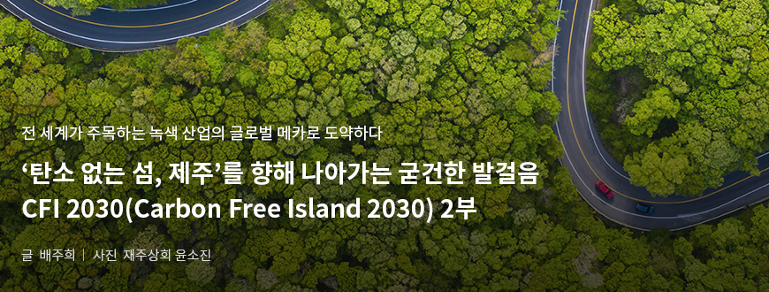
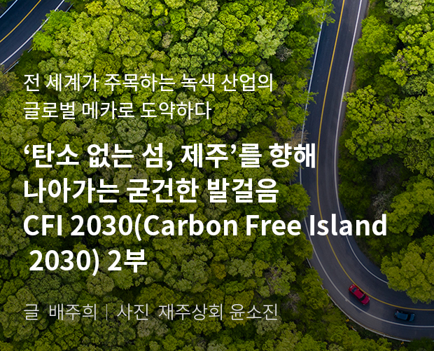
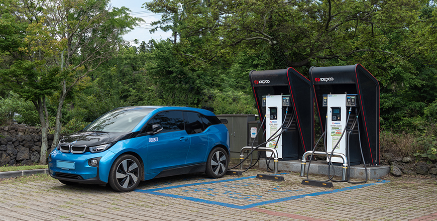
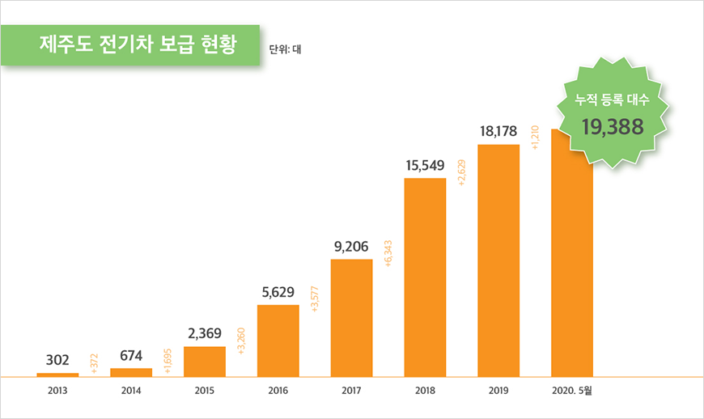
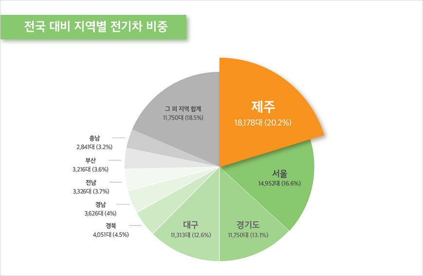
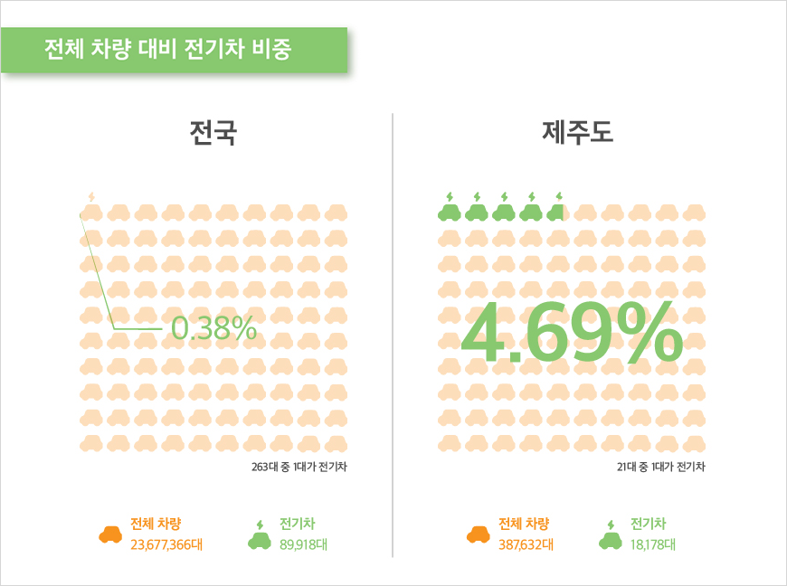
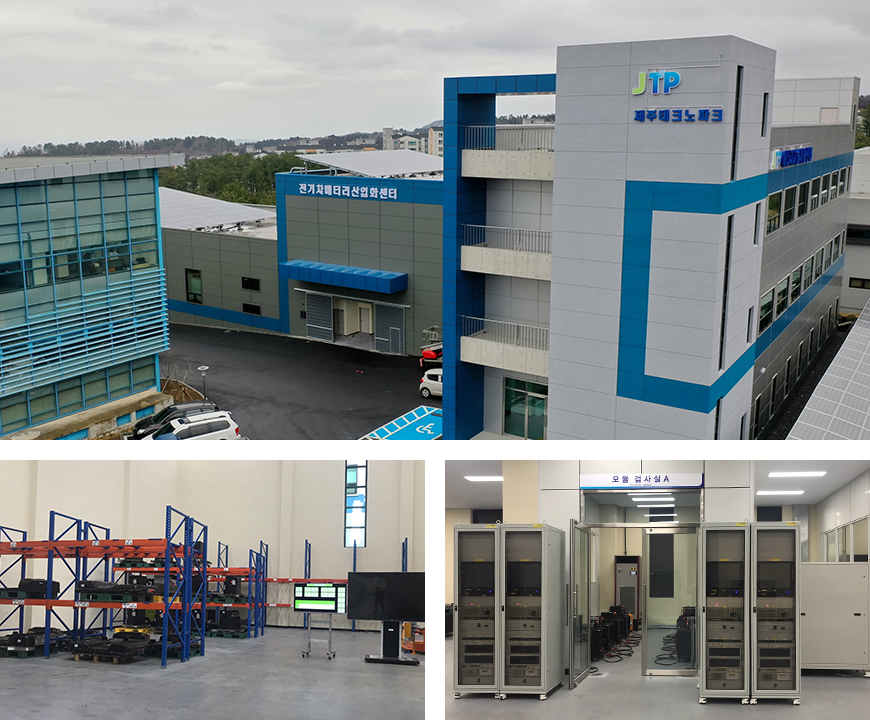
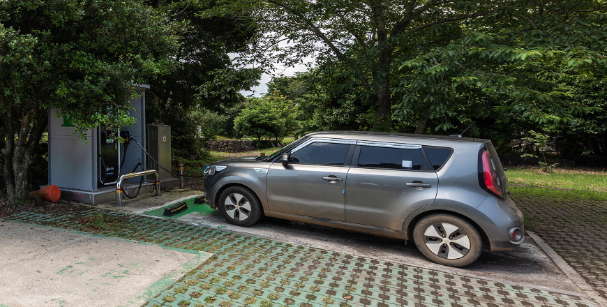

기획취재콘텐츠
- Home
- 제주라이프
- 기획취재콘텐츠
CFI 2030(Carbon Free Island 2030) 2부새로운 글


전기차의 메카 제주, 규제자유특구 지정으로 산업에 날개를 달다

- 전기차 충전소에서 충전중인 전기차 ⓒ재주상회 윤소진 -
제주도에 전기차가 처음 보급된 것은 2011년이다. 당시 환경부가 ‘전기차 선도 도시’로 서울, 전라남도 영광과 함께 제주도를 선정했고, 도는 2012년 ‘CFI 2030 계획’을 발표한 이후, 2015년 ‘전기차 보급 확대 및 산업육성을 위한 중장기 계획’을 잇따라 발표했다. 그 결과, 제주에는 국내 전체 전기차(89,918대)의 20.2%에 달하는 18,178여 대가 등록되어 있으며, 도내 전체 운행 차량 대비 전기차 비중은 4.69%에 달한다. 전국 기준 0.38%와 비교하면 열 두 배가 넘는 수치다(2019년 12월 말 기준).



※ 출처 : 13’~19’ 제주특별자치도 ‘데이터로 보는 전기차 선도도시 제주’ , 20’ 제주도 자동차등록현황. 제주도 교통정책과


※ 출처 : 국토교통부 통계누리 (2019년 12월 말 기준)
이렇게 보급률이 높은 이유는 충전 인프라 등 파생 산업 생태계가 잘 조성된 이유도 있기 때문이겠지만, 도에서 추진 중인 다양한 지원 정책을 우선 살펴볼 필요가 있다.
2020년 기준 제주도는 전기차 구매 시 최대 1,320만 원(승용차)~2,500만 원(화물차)까지 자금을 지원하고, 전기차를 구매하며 내연기관 차량을 폐차하거나 도외 반출할 시에는 폐차비를 최대 200만 원 지원한다. 또한 차량 구매 자금 지원을 받더라도 낮은 이자율로 대출까지 더 받을 수 있도록 은행과 협약을 맺어 전용 금융 상품을 만드는 등 보급률을 높이기 위해 노력하고 있다.


※ 출처 : 국토교통부 통계누리 (2019년 12월 말 기준)
전기차 관련 산업 생태계가 탄탄하게 기반을 다지고 있다는 점 역시 전기차 보급률이 꾸준히 증가하고 있는 이유라 볼 수 있다. 전기차 산업이 주목받는 이유는 파생될 수 있는 비즈니스의 종류가 다양하다는 점에 있다. 충전 서비스, 전기차 유지보수, 배터리 재사용, 전기차 개조 등이 대표적인 관련 산업 및 유망 산업으로 꼽히는데, 이중 가장 뚜렷한 성과를 보이는 건 충전 시설 및 서비스다. 수도권을 제외하면 전기차 충전 사업자 수가 가장 많은 곳이 바로 제주도라고. 유지보수 서비스의 경우 2020년부터 도와 산업부가 함께 190억 원의 예산을 투입하여 한국 생산기술 연구원에 기반을 구축하고 이곳에서 도출되는 정비유지보수 기술을 제주에 가장 먼저 도입할 계획이다.
또, 제주도에는 전국 어디에도 없는 전기차 배터리산업화센터가 있다. 2019년 6월 개소한 전기차 배터리산업화센터는 회수된 배터리의 입고부터 검사 진행, 등급 부여, 폐기 출고까지의 모든 과정을 블록체인 기술을 적용하여 관리하는 유통 이력 관리시스템을 구축, 배터리 성능평가 기준의 표준화 기반을 마련했다. 이를 통해 폐배터리 폐기로 인한 환경오염을 줄이고, 향후 배터리 빅데이터를 통해 신산업 비즈니스 또한 발굴할 수 있을 것으로 전망된다.

- 전기차배터리 산업화 센터 전경, 전기차배터리산업화센터 내부 모습 ⓒ제주테크노파크 에너지융합센터 제공 -
한편, 다양한 발전 비즈니스 모델을 품고 있는 제주 자동차 산업에 날개가 되어줄 계기가 생겼다. 2019년 11월 제주도가 전기차 충전서비스 규제자유특구로 지정된 것. 이번 규제자유특구 지정은 전기차충전서비스 분야에서 규제 혁신을 통한 사회적 비용을 줄이고, 신산업을 발굴하는 데 그 목적이 있다. 267억 원의 사업비 투입, 총 15개 사업자가 참여하여 최소 2년간 진행될 실증 사업으로 선정된 분야는 △충전시간 단축을 위한 충전 인프라 고도화 실증 △점유공간 최소화를 위한 이동형 충전 서비스 실증 △활용성 증대를 위한 충전 인프라 공유 플랫폼 실증 △충전 데이터 기반의 간이 진단 서비스 등 총 4개 분야다.
이는 곧 전기차 충전기와 관련된 각종 규제가 완화되고, 이동형 전기차 충전기와 개인 소유 충전기를 공유하거나 수익화하는 사업이 가능하다는 뜻이다. 향후 제주에서는 휴대용 충전기 등 충전 시설의 다양화를 위한 개발이 활발해지고, 더 큰 용량의 충전기를 사용할 수 있게 되었으며, 개인 소유의 충전기를 전문 사업자에게 위탁 공유하여 충전 인프라로 활용, 이를 통해 수익을 얻을 수 있게 된 것이다. 특히 충전기 공유 서비스는 전 세계적으로 수출할 수 있는 플랫폼으로 평가되고 있어 제주 전기차 산업의 세계화에도 톡톡히 한몫을 할 것으로 기대된다.

- 전기차 중전소에서 충전중인 전기차 ⓒ재주상회 윤소진 -